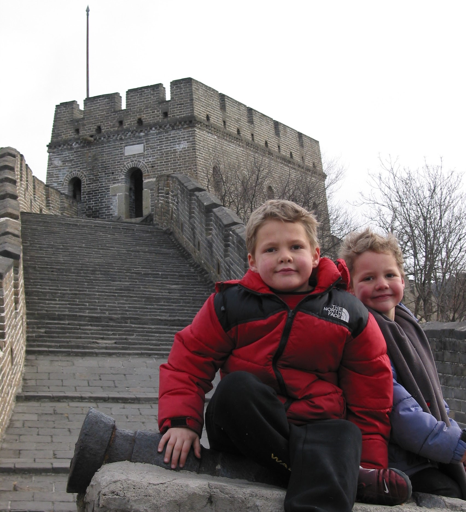

About Me
"It's all a great mystery [...] Look up at the sky and you'll see how everything changes"Antoine de Saint-Exupéry, The Little Prince
As you could have guessed, my name is Erwan. Although born in the suburbs of Paris, I spent the first four years of my life in Texas, before doing the rest of my school life in Beijing. For university, I completed an astronomy bachelor's program at Rijksuniversiteit Groningen and my master's in physics at Leiden University where I now work as PhD candidate under Simon Portegies Zwart, focusing on anything N-body dynamics related.
My full CV can be found here.Some of my interests include:
- Playing football.
- Photography.
- Bird watching.
- Reading.
- Scuba Diving.
- Gardening.
- Going to a museum.
